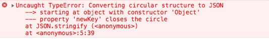

深拷贝系列 ———— 什么是深拷贝、浅拷贝、Object.assign
深拷贝系列 ———— 自己实现一个 JSON.stringify 和 JSON.parse
深拷贝系列 ———— 自己通过递归实现一个深拷贝
深拷贝系列 ———— 分析 lodash 中的 deepcopy
简介
在上篇文章我们已经了解什么是深拷贝和浅拷贝，也着重介绍了浅拷贝相关的一下实现方法，或者自己实现一个浅拷贝等等。本篇文章主要介绍深拷贝的一种简单实现方式JSON.parse/JSON.stringify。在平常开发时我们可以经常的看到别人使用，或者在不那么了解深拷贝时自己也有使用。
JSON.parse/JSON.stringify其实是用来序列化 JSON 格式的数据的方法。那它为什么能实现一个简单的深拷贝呢？
在执行JSON.stringify会把我们的一个对象序列化为字符串，而字符串是基本类型。
再通过JSON.parse时，把字符串类型反序列化为对象，这个时候因为在反序列化之前它是基本类型所以他会指向一个新的地址，在反序列化之后它是一个对象会再分配内存空间。
所以JSON.parse/JSON.stringify可以实现一个简单的深拷贝。
本篇文章首先实现一个JSON.stringify/JSON.parse，下一篇文章实现一个比较完整的深拷贝。
实例
直接上代码验证一下
1 | // 声明原始对象 |
其实是不是以为用这个就可以了，并没有什么问题啊，下面我们就来一点点揭开它的面纱。
局限性
其实JSON.parse/JSON.stringify还是有很多局限性，大致如下：
- 会忽略
undefined - 会忽略
Symbol - 无法序列化
function，也会忽略 - 无法解决循环引用，会报错
- 深层对象转换爆栈
直接上代码验证
1 | // 声明一个包含undefined、null、symbol、function的对象 |
如果循环引用报错如下图所示：

一个生成任意深度、广度对象方法。
1 | function createData(deep, breadth) { |
验证JSON.stringify递归爆栈
1 | JSON.stringify(createData(10000)); |
自己实现 JSON.stringify
- 首先一个简单的递归
- 区分
String与Boolean、Number、null - 过滤
undefined、symbol、function - 循环引用警告
一个简单的递归
实现目标
- 递归调用
1 | // 数据类型判断 |
在上面代码中我们基本的JSON序列化，可以序列化引用类型和基本类型。
区分数据类型
我说的区分的类型，是JSON.stringify再序列化时，像Number、Boolean、null它是不会加上双引号的，只有在String类型或者Object中的key才会带双引号。
- 增加一个判断当前属性类型
1 | // 。。。省略代码 |
不处理部分值
- 通过正则判断过滤
Symbol|Function|Undefined - 跳过当前循环
1 | if (/Symbol|Function|Undefined/.test(getType(item))) { |
循环引用警告
- 处理循环引用，警告并且退出循环
1 | if (item === obj) { |
Stringify总结
到此自己实现JSON.stringify到此结束了，完整代码如下：
1 | // 数据类型判断 |
JSON.parse 实现
有两种方法实现parse效果，第一种是eval实现，另一种是Function实现，下面直接开始。
eval 实现
1 | function ParseJson(opt) { |
可以看到上面的代码可以实现基本的反序列化。
避免在不必要的情况下使用 eval，eval() 是一个危险的函数， 他执行的代码拥有着执行者的权利。如果你用 eval()运行的字符串代码被恶意方（不怀好意的人）操控修改，您最终可能会在您的网页/扩展程序的权限下，在用户计算机上运行恶意代码。
Function 实现
1 | function ParseJsonTwo(opt) { |
eval 与 Function 都有着动态编译js代码的作用，但是在实际的编程中并不推荐使用。
处理 XSS
它会执行 JS 代码，有 XSS 漏洞。
如果你只想记这个方法，就得对参数 json 做校验。
1 | var rx_one = /^[\],:{}\s]*$/; |
Parse总结
其实无论在什么时候都不太推荐eval和function，因为它很容造成入侵。
如果有兴趣可以去看一下JSON.parse 三种实现方式，它有涉及到递归实现，状态机实现，讲的也不错。
总结
本篇文章主要讲解了JSON.parse/JSON.stringify是怎么实现的深拷贝，并且深入了解一下JSON.parse/JSON.stringify在深拷贝上的实现，其实还有怎么加速JSON序列化的速度，会在另一篇文章中讲解。最后自己也简单实现了一个ParseJson/StringIfy。